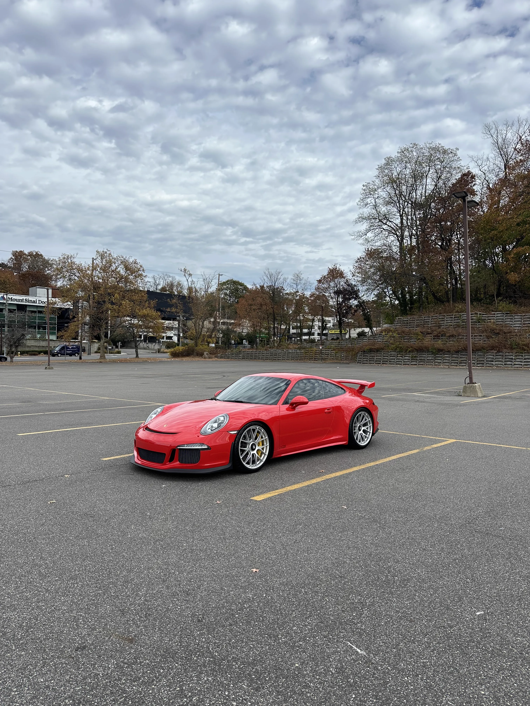
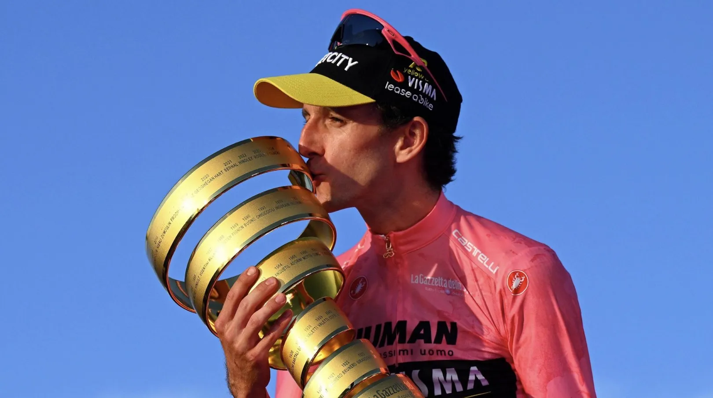
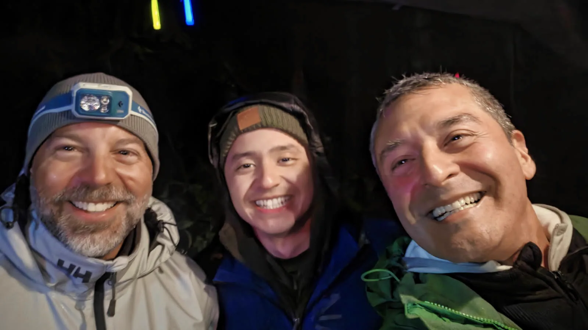
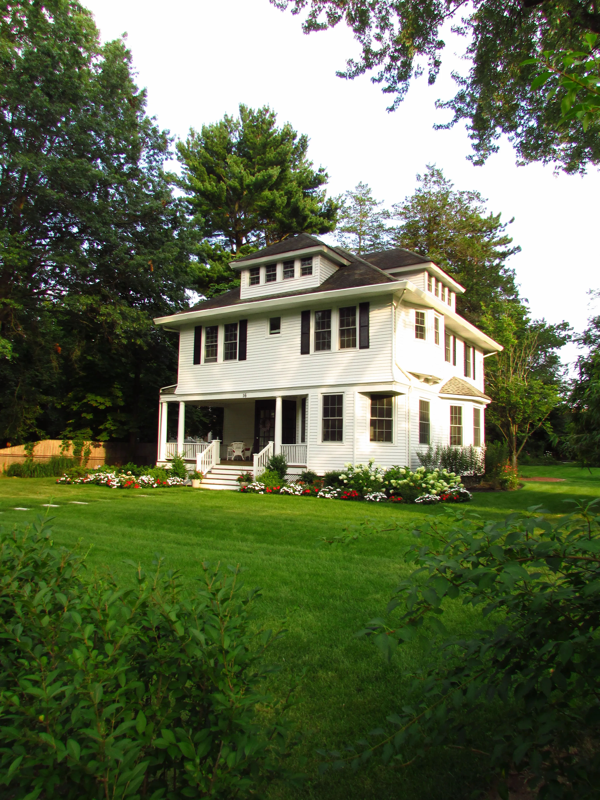
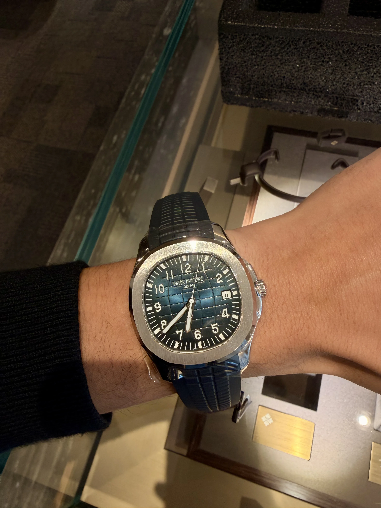
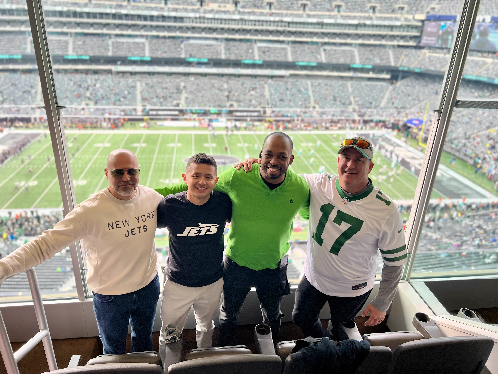

Lifestyle
Life Outside
of Work
Outside of work, I'm usually on my bike chasing miles, on a tennis court, or finding a trail somewhere with a decent view. It's how I reset getting outside, moving, and not thinking about screens for a while.
Staying active keeps me sharp. It's not just about fitness it's how I clear my head and stay grounded.
Gallery
Highlights.

Dream GT3

My Favorite Cycling Race

Camping 2026

Dream Home

Dream Patek

Jets Game
What's Next
Copenhagen in 2027.
In 2027, I'm making Copenhagen home. New York raised me, sharpened me, and gave me everything I have, and I'll always be grateful for it. But Copenhagen is where I want to build my future: a place to do work that matters, put down roots, and keep growing for years to come. A blank canvas. How exciting.

Copenhagen.
Denmark
It's the kind of place where I could do real engineering work, take in all the beauty around me, and, above all, ride my bike everywhere.
I'm looking for engineering opportunities where I can build things that matter and keep growing alongside people who care about their craft. If that sounds like your team, I'd love to connect.
Get in touch